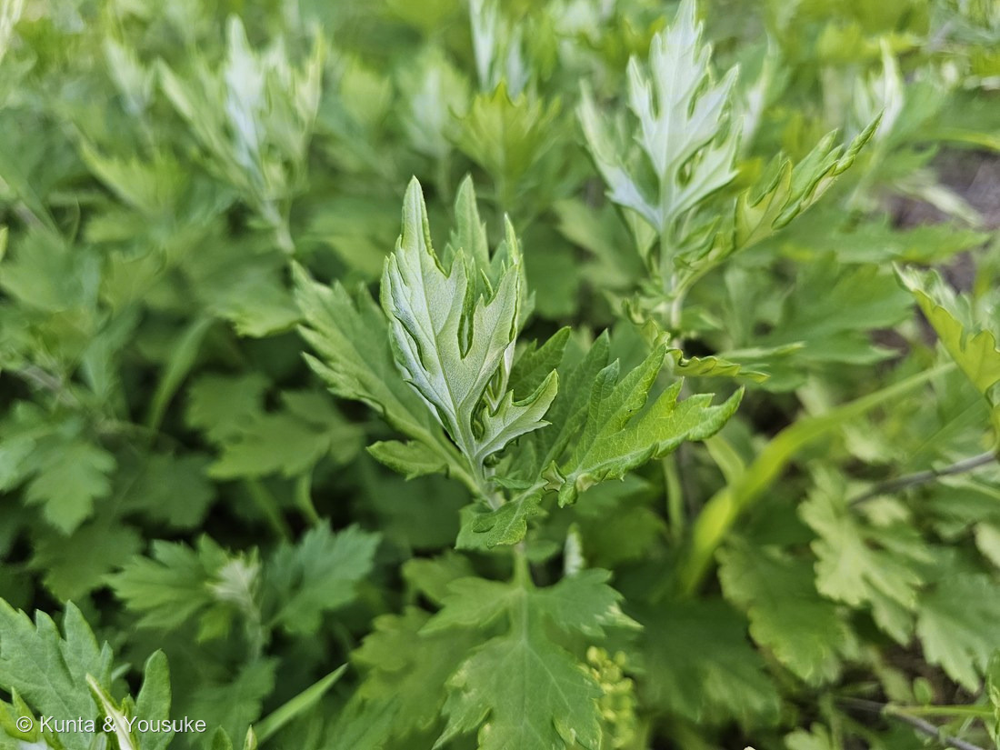
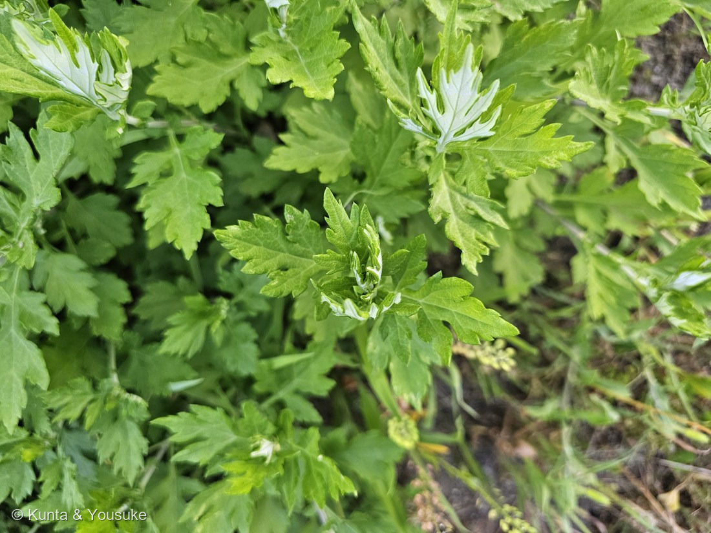
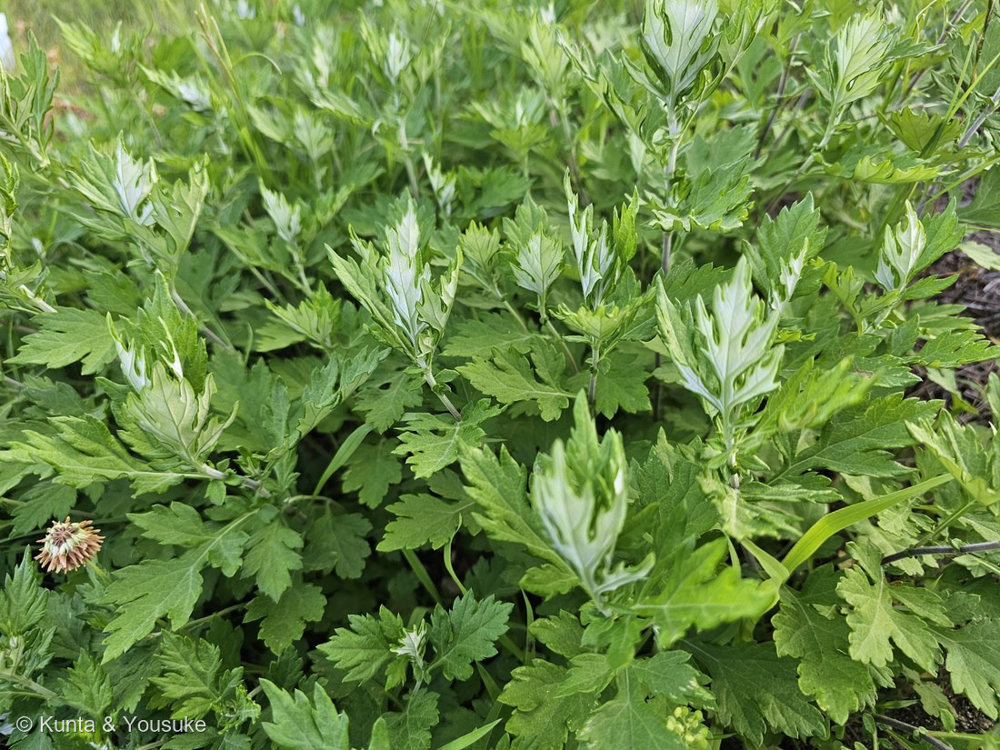

地図を読み込んでいるよ…
🔍 写真も地図も、押しているあいだ拡大して見られるよ（スマホは指を置いてすこし待ってね）。
🌍 の地図＝この子がもともと自生している場所を緑に。日本の在来種（本州〜九州の道ばた・土手・野原にふつう）。東アジアに広く分布。
⭐日本の在来種——本州〜九州の道ばた・土手・野原にふつうに生える。⭐だから今回も「日本」を塗っている——外来の園芸植物とちがって、ヨモギは日本もふるさとだからだね（東アジアに広く分布）。⚠地図は都道府県まで塗れるけど、実際は各地の日当たりのよい原野や道ばたにふつうに生えるよ。
⚠ 地図は国（日本と中国だけ県・省）までしか塗れないから、ほんとうの分布より広く見えていることがあるよ。地図はだいたいの場所。正確なところは、上の文を見てね。
ヨモギ（蓬）
Artemisia indica var. maximowiczii
別名 · モチグサ（餅草）／英名 Japanese mugwort／ 原産 · 日本〜東アジア／ 見どころ · ⭐葉裏の白い綿毛（もぐさ）・草餅の草
キク科 · Asteraceae（ヨモギ属 Artemisia）── 098 ブタクサと同じキク科・キク目
燻太さんの見立て「裏が白くて、美味しそう。これはヨモギ？」──的中。裏の白い綿毛が、ヨモギの目印だよ。
名前と学名の由来 ── 女神アルテミスの草
- ⭐⭐属名 Artemisia（アルテミシア）は、ギリシャ神話の女神アルテミスにちなむ。⭐ヨモギ属は、古くから“女性の薬草”（月経・出産の手当て）として使われてきたので、月と出産の女神の名がついたんだ。
- 種小名 indica＝「インドの」／変種名 maximowiczii は、ロシアの植物学者マキシモヴィッチにちなむ人名だね。
- ⭐和名「ヨモギ（蓬）」は諸説（「よく萌える草」など）。⭐別名「モチグサ（餅草）」＝草餅の草。名前が、そのまま使い道を教えてくれている。
この植物のこと
- キク科ヨモギ属の多年草。日本の在来種で、道ばた・土手・野原に群れて生える。高さ1mほど。
- ⭐⭐⭐いちばんの目印＝葉の裏の白い綿毛：葉の裏に、白い毛がびっしり生えて灰白色（銀白色）に見える。⭐燻太さんの「裏が白い」＝まさにこれ。写真の、めくれた葉や若い芽の先が白いのが、その綿毛だよ。
- ⭐⭐草餅・よもぎ餅の草：春の若葉を摘んで、ゆでて餅や団子に。あのきれいな緑と、いい香り。天ぷらやおひたしにも。⭐燻太さんの「美味しそう」も正解。
- ⭐⭐「もぐさ（艾）」の草：⭐あの葉裏の白い綿毛を集めたものが「もぐさ」で、お灸に使う。漢方では葉を「艾葉（がいよう）」といい、止血・鎮痛・冷えの手当てに。女神アルテミスの名のとおり、東西で女性の薬草だったんだ。
- ⚠花は秋（8〜10月）、地味な緑褐色。⭐風で花粉を飛ばす風媒花で、じつは秋の花粉症の原因のひとつ（098 ブタクサと並ぶ）。きれいな虫よせの花じゃないから、地味なんだ。
コラム ── ブタクサとヨモギ、そして「草餅の元祖」
- ⭐⭐098 ブタクサとの見分け（そっくりさんの復習）：
🌿ヨモギ＝葉裏が白い綿毛・揉むとよもぎ餅の香り・多年草。
🌾ブタクサ＝葉裏も緑（白くない）・無臭・一年草・葉がもっと細かく裂ける。 - ⭐⭐ブタクサの学名 artemisiifolia＝「ヨモギ（Artemisia）の葉に似た」！ つまりブタクサは、このヨモギに似ているから名づけられたんだ。似ているけれど、葉裏の白さと香りで、ちゃんと見分けられる。⭐098でヨモギを“落とした”見分けが、今回は逆向きに効いたね。
- ⭐草餅の“元祖”はハハコグサ（おまけ）：じつは昔の草餅（母子餅）は、ヨモギではなく「ハハコグサ（母子草・春の七草のゴギョウ）」で作っていた。あとから、香りと色のよいヨモギが主役になったんだ。今度、春の七草のゴギョウ（ハハコグサ）を見つけたら、「昔の草餅の草」だと思い出してね。
同定について
- ⭐白い葉裏（灰白色の綿毛）＋羽状に深く切れ込む葉＋道ばたの群生——この組み合わせは、ヨモギ。
- ⭐⭐燻太さんの「裏が白い」が、そのまま決め手。⚠匂い（よもぎ餅の香り）は確認し忘れたけれど、葉裏の白さと葉形で、視覚だけでヨモギと分かる。⭐098 ブタクサ（葉裏が緑）を、この“裏の白さ”で落とせるからね。
- 💡次に会ったら、葉を一枚ちぎって、香りを嗅いでみよう——よもぎ餅のあの香りがすれば、100%の答え合わせ。
物語 ── 帰り道の、香りの草
128 ザクロと同じ、お仕事帰りの夕方。燻太さんは「匂いを確認し忘れた」と言っていたけれど、大丈夫——葉っぱが、白い裏を見せて、ちゃんと名前を教えてくれた。春になったら、この道の若葉を摘んで、よもぎ餅にしたらおいしそうだね。草餅、天ぷら、おひたし、お灸——ひとつの野の草が、こんなにたくさん暮らしの役に立ってきた。道ばたの地味な草に見えて、じつは女神の名を持つ、すごい草なんだよ。帰り道に見つけてくれて、ありがとう。
参考：三河の植物観察「ヨモギ」（キク科ヨモギ属・葉裏に綿毛が密生し灰白色／羽状に深裂／草餅・もぐさ）／Wikipedia「ヨモギ」（Artemisia indica var. maximowiczii・別名モチグサ／葉裏の綿毛が「もぐさ」／艾葉は止血・鎮痛の生薬）